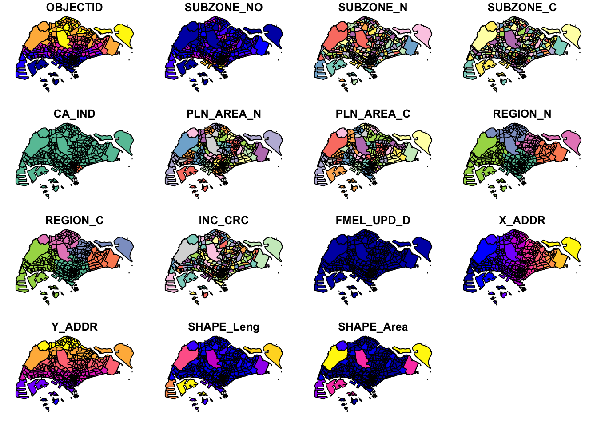
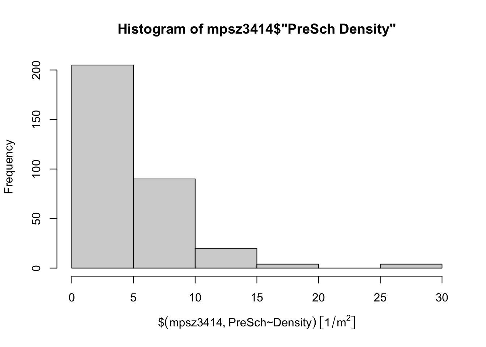
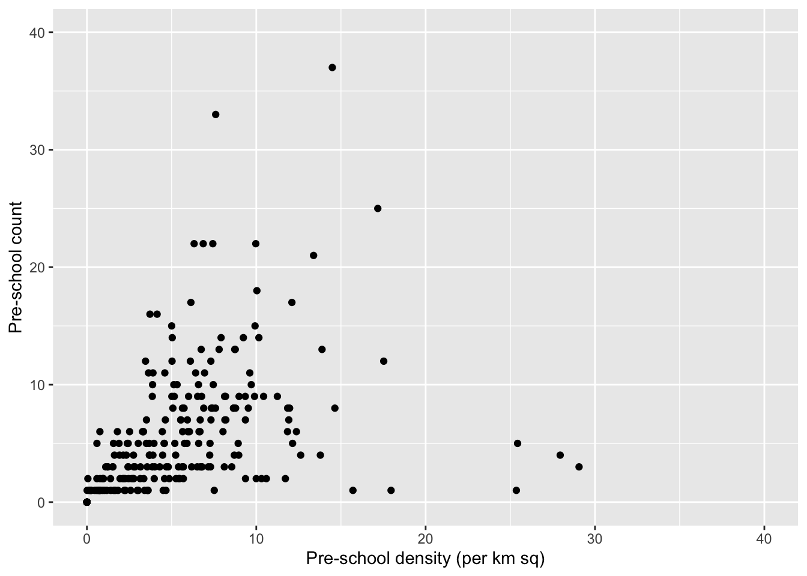
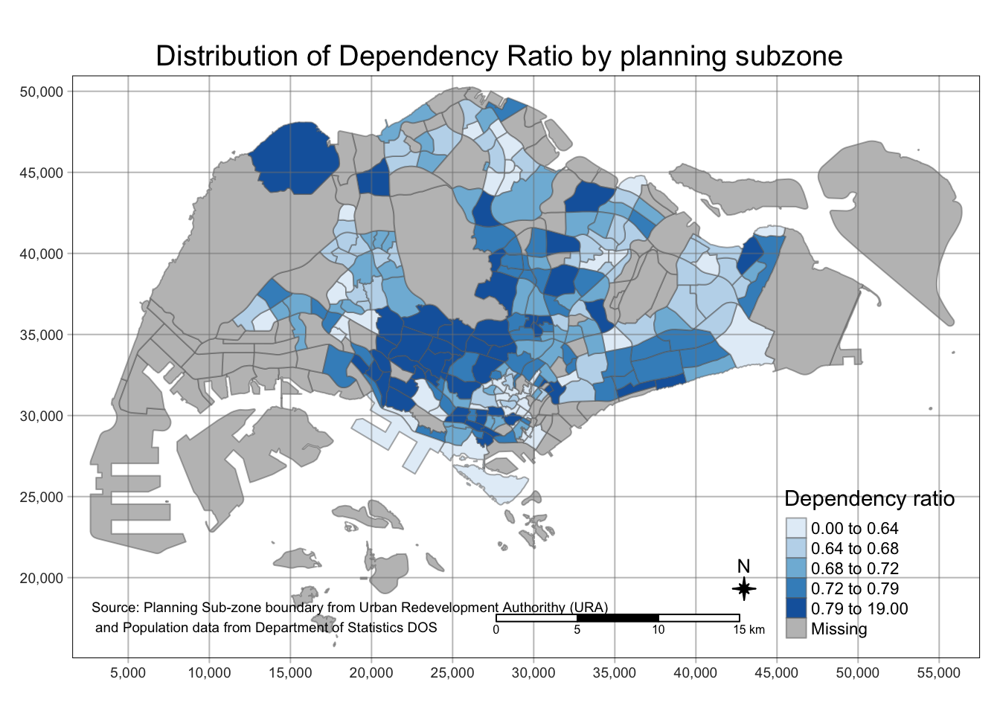
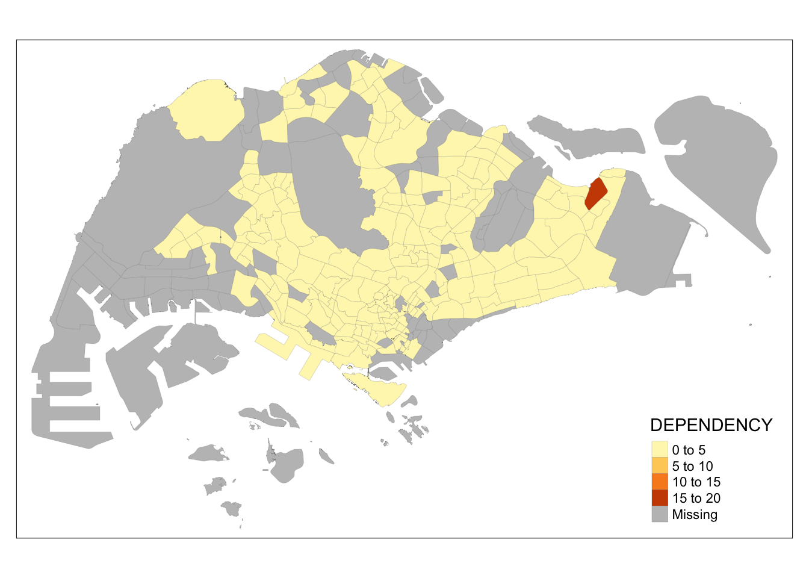

pacman::p_load(sf, tidyverse, tmap)Hands-on Exercise 1: Geospatial Data Wrangling with R
Geospatial Data Wrangling with R
Overview:
In this hands-on exercise, I learn how to import and wrangling geospatial data using appropriate R packages.
Getting Started
The code chunk below install and load sf, tidyverse and tmap (for Chloropeth Mapping with R) packages into R environment.
Firstly, ensure you have downloaded the pacman library, else run install.packages(“pacman”) on your console before proceeding with the below code.
Importing Geospatial Data
Importing polygon feature data
mpsz <- st_read(dsn = "data/geospatial",
layer = "MP14_SUBZONE_WEB_PL")Reading layer `MP14_SUBZONE_WEB_PL' from data source
`/Users/ridz/ridhicar/ISSS624/Hands-on_Ex1/data/geospatial'
using driver `ESRI Shapefile'
Simple feature collection with 323 features and 15 fields
Geometry type: MULTIPOLYGON
Dimension: XY
Bounding box: xmin: 2667.538 ymin: 15748.72 xmax: 56396.44 ymax: 50256.33
Projected CRS: SVY21mpszSimple feature collection with 323 features and 15 fields
Geometry type: MULTIPOLYGON
Dimension: XY
Bounding box: xmin: 2667.538 ymin: 15748.72 xmax: 56396.44 ymax: 50256.33
Projected CRS: SVY21
First 10 features:
OBJECTID SUBZONE_NO SUBZONE_N SUBZONE_C CA_IND PLN_AREA_N
1 1 1 MARINA SOUTH MSSZ01 Y MARINA SOUTH
2 2 1 PEARL'S HILL OTSZ01 Y OUTRAM
3 3 3 BOAT QUAY SRSZ03 Y SINGAPORE RIVER
4 4 8 HENDERSON HILL BMSZ08 N BUKIT MERAH
5 5 3 REDHILL BMSZ03 N BUKIT MERAH
6 6 7 ALEXANDRA HILL BMSZ07 N BUKIT MERAH
7 7 9 BUKIT HO SWEE BMSZ09 N BUKIT MERAH
8 8 2 CLARKE QUAY SRSZ02 Y SINGAPORE RIVER
9 9 13 PASIR PANJANG 1 QTSZ13 N QUEENSTOWN
10 10 7 QUEENSWAY QTSZ07 N QUEENSTOWN
PLN_AREA_C REGION_N REGION_C INC_CRC FMEL_UPD_D X_ADDR
1 MS CENTRAL REGION CR 5ED7EB253F99252E 2014-12-05 31595.84
2 OT CENTRAL REGION CR 8C7149B9EB32EEFC 2014-12-05 28679.06
3 SR CENTRAL REGION CR C35FEFF02B13E0E5 2014-12-05 29654.96
4 BM CENTRAL REGION CR 3775D82C5DDBEFBD 2014-12-05 26782.83
5 BM CENTRAL REGION CR 85D9ABEF0A40678F 2014-12-05 26201.96
6 BM CENTRAL REGION CR 9D286521EF5E3B59 2014-12-05 25358.82
7 BM CENTRAL REGION CR 7839A8577144EFE2 2014-12-05 27680.06
8 SR CENTRAL REGION CR 48661DC0FBA09F7A 2014-12-05 29253.21
9 QT CENTRAL REGION CR 1F721290C421BFAB 2014-12-05 22077.34
10 QT CENTRAL REGION CR 3580D2AFFBEE914C 2014-12-05 24168.31
Y_ADDR SHAPE_Leng SHAPE_Area geometry
1 29220.19 5267.381 1630379.3 MULTIPOLYGON (((31495.56 30...
2 29782.05 3506.107 559816.2 MULTIPOLYGON (((29092.28 30...
3 29974.66 1740.926 160807.5 MULTIPOLYGON (((29932.33 29...
4 29933.77 3313.625 595428.9 MULTIPOLYGON (((27131.28 30...
5 30005.70 2825.594 387429.4 MULTIPOLYGON (((26451.03 30...
6 29991.38 4428.913 1030378.8 MULTIPOLYGON (((25899.7 297...
7 30230.86 3275.312 551732.0 MULTIPOLYGON (((27746.95 30...
8 30222.86 2208.619 290184.7 MULTIPOLYGON (((29351.26 29...
9 29893.78 6571.323 1084792.3 MULTIPOLYGON (((20996.49 30...
10 30104.18 3454.239 631644.3 MULTIPOLYGON (((24472.11 29...Importing polyline feature data
cyclingpath = st_read(dsn = "data/geospatial",
layer = "CyclingPath")Reading layer `CyclingPath' from data source
`/Users/ridz/ridhicar/ISSS624/Hands-on_Ex1/data/geospatial'
using driver `ESRI Shapefile'
Simple feature collection with 1625 features and 2 fields
Geometry type: LINESTRING
Dimension: XY
Bounding box: xmin: 12711.19 ymin: 28711.33 xmax: 42626.09 ymax: 48948.15
Projected CRS: SVY21Importing GIS data in kml format
preschool = st_read("data/geospatial/pre-schools-location-kml.kml")Reading layer `PRESCHOOLS_LOCATION' from data source
`/Users/ridz/ridhicar/ISSS624/Hands-on_Ex1/data/geospatial/pre-schools-location-kml.kml'
using driver `KML'
Simple feature collection with 1359 features and 2 fields
Geometry type: POINT
Dimension: XYZ
Bounding box: xmin: 103.6824 ymin: 1.248403 xmax: 103.9897 ymax: 1.462134
z_range: zmin: 0 zmax: 0
Geodetic CRS: WGS 84Importing Attribute Data into R (Chloropleth Mapping with R)
popdata <- read_csv("data/aspatial/respopagesextod2011to2020.csv")Rows: 984656 Columns: 7
── Column specification ────────────────────────────────────────────────────────
Delimiter: ","
chr (5): PA, SZ, AG, Sex, TOD
dbl (2): Pop, Time
ℹ Use `spec()` to retrieve the full column specification for this data.
ℹ Specify the column types or set `show_col_types = FALSE` to quiet this message.popdata# A tibble: 984,656 × 7
PA SZ AG Sex TOD Pop Time
<chr> <chr> <chr> <chr> <chr> <dbl> <dbl>
1 Ang Mo Kio Ang Mo Kio Town Centre 0_to_4 Males HDB 1- and 2-Ro… 0 2011
2 Ang Mo Kio Ang Mo Kio Town Centre 0_to_4 Males HDB 3-Room Flats 10 2011
3 Ang Mo Kio Ang Mo Kio Town Centre 0_to_4 Males HDB 4-Room Flats 30 2011
4 Ang Mo Kio Ang Mo Kio Town Centre 0_to_4 Males HDB 5-Room and … 50 2011
5 Ang Mo Kio Ang Mo Kio Town Centre 0_to_4 Males HUDC Flats (exc… 0 2011
6 Ang Mo Kio Ang Mo Kio Town Centre 0_to_4 Males Landed Properti… 0 2011
7 Ang Mo Kio Ang Mo Kio Town Centre 0_to_4 Males Condominiums an… 40 2011
8 Ang Mo Kio Ang Mo Kio Town Centre 0_to_4 Males Others 0 2011
9 Ang Mo Kio Ang Mo Kio Town Centre 0_to_4 Females HDB 1- and 2-Ro… 0 2011
10 Ang Mo Kio Ang Mo Kio Town Centre 0_to_4 Females HDB 3-Room Flats 10 2011
# … with 984,646 more rowsChecking the Content of A Simple Feature Data Frame
Working with st_geometry()
st_geometry(mpsz)Geometry set for 323 features
Geometry type: MULTIPOLYGON
Dimension: XY
Bounding box: xmin: 2667.538 ymin: 15748.72 xmax: 56396.44 ymax: 50256.33
Projected CRS: SVY21
First 5 geometries:MULTIPOLYGON (((31495.56 30140.01, 31980.96 296...MULTIPOLYGON (((29092.28 30021.89, 29119.64 300...MULTIPOLYGON (((29932.33 29879.12, 29947.32 298...MULTIPOLYGON (((27131.28 30059.73, 27088.33 297...MULTIPOLYGON (((26451.03 30396.46, 26440.47 303...Working with glimpse()
glimpse(mpsz)Rows: 323
Columns: 16
$ OBJECTID <int> 1, 2, 3, 4, 5, 6, 7, 8, 9, 10, 11, 12, 13, 14, 15, 16, 17, …
$ SUBZONE_NO <int> 1, 1, 3, 8, 3, 7, 9, 2, 13, 7, 12, 6, 1, 5, 1, 1, 3, 2, 2, …
$ SUBZONE_N <chr> "MARINA SOUTH", "PEARL'S HILL", "BOAT QUAY", "HENDERSON HIL…
$ SUBZONE_C <chr> "MSSZ01", "OTSZ01", "SRSZ03", "BMSZ08", "BMSZ03", "BMSZ07",…
$ CA_IND <chr> "Y", "Y", "Y", "N", "N", "N", "N", "Y", "N", "N", "N", "N",…
$ PLN_AREA_N <chr> "MARINA SOUTH", "OUTRAM", "SINGAPORE RIVER", "BUKIT MERAH",…
$ PLN_AREA_C <chr> "MS", "OT", "SR", "BM", "BM", "BM", "BM", "SR", "QT", "QT",…
$ REGION_N <chr> "CENTRAL REGION", "CENTRAL REGION", "CENTRAL REGION", "CENT…
$ REGION_C <chr> "CR", "CR", "CR", "CR", "CR", "CR", "CR", "CR", "CR", "CR",…
$ INC_CRC <chr> "5ED7EB253F99252E", "8C7149B9EB32EEFC", "C35FEFF02B13E0E5",…
$ FMEL_UPD_D <date> 2014-12-05, 2014-12-05, 2014-12-05, 2014-12-05, 2014-12-05…
$ X_ADDR <dbl> 31595.84, 28679.06, 29654.96, 26782.83, 26201.96, 25358.82,…
$ Y_ADDR <dbl> 29220.19, 29782.05, 29974.66, 29933.77, 30005.70, 29991.38,…
$ SHAPE_Leng <dbl> 5267.381, 3506.107, 1740.926, 3313.625, 2825.594, 4428.913,…
$ SHAPE_Area <dbl> 1630379.27, 559816.25, 160807.50, 595428.89, 387429.44, 103…
$ geometry <MULTIPOLYGON [m]> MULTIPOLYGON (((31495.56 30..., MULTIPOLYGON (…Working with head()
head(mpsz, n=5)Simple feature collection with 5 features and 15 fields
Geometry type: MULTIPOLYGON
Dimension: XY
Bounding box: xmin: 25867.68 ymin: 28369.47 xmax: 32362.39 ymax: 30435.54
Projected CRS: SVY21
OBJECTID SUBZONE_NO SUBZONE_N SUBZONE_C CA_IND PLN_AREA_N
1 1 1 MARINA SOUTH MSSZ01 Y MARINA SOUTH
2 2 1 PEARL'S HILL OTSZ01 Y OUTRAM
3 3 3 BOAT QUAY SRSZ03 Y SINGAPORE RIVER
4 4 8 HENDERSON HILL BMSZ08 N BUKIT MERAH
5 5 3 REDHILL BMSZ03 N BUKIT MERAH
PLN_AREA_C REGION_N REGION_C INC_CRC FMEL_UPD_D X_ADDR
1 MS CENTRAL REGION CR 5ED7EB253F99252E 2014-12-05 31595.84
2 OT CENTRAL REGION CR 8C7149B9EB32EEFC 2014-12-05 28679.06
3 SR CENTRAL REGION CR C35FEFF02B13E0E5 2014-12-05 29654.96
4 BM CENTRAL REGION CR 3775D82C5DDBEFBD 2014-12-05 26782.83
5 BM CENTRAL REGION CR 85D9ABEF0A40678F 2014-12-05 26201.96
Y_ADDR SHAPE_Leng SHAPE_Area geometry
1 29220.19 5267.381 1630379.3 MULTIPOLYGON (((31495.56 30...
2 29782.05 3506.107 559816.2 MULTIPOLYGON (((29092.28 30...
3 29974.66 1740.926 160807.5 MULTIPOLYGON (((29932.33 29...
4 29933.77 3313.625 595428.9 MULTIPOLYGON (((27131.28 30...
5 30005.70 2825.594 387429.4 MULTIPOLYGON (((26451.03 30...Plotting the Geospatial Data
plot(mpsz)Warning: plotting the first 9 out of 15 attributes; use max.plot = 15 to plot
all
Using max.plot = 15 to plot all attributes;
# To visualise the geospatial features
plot(mpsz, max.plot = 15)
# To plot only the geometry
plot(st_geometry(mpsz))# To plot the sf object by using specific attribute
plot(mpsz["PLN_AREA_N"])
Working with Projection
Assigning EPSG code to a simple feature data frame
# To check the CSR
st_crs(mpsz)Coordinate Reference System:
User input: SVY21
wkt:
PROJCRS["SVY21",
BASEGEOGCRS["SVY21[WGS84]",
DATUM["World Geodetic System 1984",
ELLIPSOID["WGS 84",6378137,298.257223563,
LENGTHUNIT["metre",1]],
ID["EPSG",6326]],
PRIMEM["Greenwich",0,
ANGLEUNIT["Degree",0.0174532925199433]]],
CONVERSION["unnamed",
METHOD["Transverse Mercator",
ID["EPSG",9807]],
PARAMETER["Latitude of natural origin",1.36666666666667,
ANGLEUNIT["Degree",0.0174532925199433],
ID["EPSG",8801]],
PARAMETER["Longitude of natural origin",103.833333333333,
ANGLEUNIT["Degree",0.0174532925199433],
ID["EPSG",8802]],
PARAMETER["Scale factor at natural origin",1,
SCALEUNIT["unity",1],
ID["EPSG",8805]],
PARAMETER["False easting",28001.642,
LENGTHUNIT["metre",1],
ID["EPSG",8806]],
PARAMETER["False northing",38744.572,
LENGTHUNIT["metre",1],
ID["EPSG",8807]]],
CS[Cartesian,2],
AXIS["(E)",east,
ORDER[1],
LENGTHUNIT["metre",1,
ID["EPSG",9001]]],
AXIS["(N)",north,
ORDER[2],
LENGTHUNIT["metre",1,
ID["EPSG",9001]]]]# To assign the correct EPSG code to mpsz data frame
mpsz3414 <- st_set_crs(mpsz, 3414)Warning: st_crs<- : replacing crs does not reproject data; use st_transform for
that# To check the CSR again
st_crs(mpsz3414)Coordinate Reference System:
User input: EPSG:3414
wkt:
PROJCRS["SVY21 / Singapore TM",
BASEGEOGCRS["SVY21",
DATUM["SVY21",
ELLIPSOID["WGS 84",6378137,298.257223563,
LENGTHUNIT["metre",1]]],
PRIMEM["Greenwich",0,
ANGLEUNIT["degree",0.0174532925199433]],
ID["EPSG",4757]],
CONVERSION["Singapore Transverse Mercator",
METHOD["Transverse Mercator",
ID["EPSG",9807]],
PARAMETER["Latitude of natural origin",1.36666666666667,
ANGLEUNIT["degree",0.0174532925199433],
ID["EPSG",8801]],
PARAMETER["Longitude of natural origin",103.833333333333,
ANGLEUNIT["degree",0.0174532925199433],
ID["EPSG",8802]],
PARAMETER["Scale factor at natural origin",1,
SCALEUNIT["unity",1],
ID["EPSG",8805]],
PARAMETER["False easting",28001.642,
LENGTHUNIT["metre",1],
ID["EPSG",8806]],
PARAMETER["False northing",38744.572,
LENGTHUNIT["metre",1],
ID["EPSG",8807]]],
CS[Cartesian,2],
AXIS["northing (N)",north,
ORDER[1],
LENGTHUNIT["metre",1]],
AXIS["easting (E)",east,
ORDER[2],
LENGTHUNIT["metre",1]],
USAGE[
SCOPE["Cadastre, engineering survey, topographic mapping."],
AREA["Singapore - onshore and offshore."],
BBOX[1.13,103.59,1.47,104.07]],
ID["EPSG",3414]]Transforming the projection of the preschool from wg84 to svy21.
# To reproject preschool from one coordinate system i.e., wg84 to another i.e., svy21.
preschool3414 <- st_transform(preschool,
crs = 3414)# To check the CRS
st_crs(preschool3414)Coordinate Reference System:
User input: EPSG:3414
wkt:
PROJCRS["SVY21 / Singapore TM",
BASEGEOGCRS["SVY21",
DATUM["SVY21",
ELLIPSOID["WGS 84",6378137,298.257223563,
LENGTHUNIT["metre",1]]],
PRIMEM["Greenwich",0,
ANGLEUNIT["degree",0.0174532925199433]],
ID["EPSG",4757]],
CONVERSION["Singapore Transverse Mercator",
METHOD["Transverse Mercator",
ID["EPSG",9807]],
PARAMETER["Latitude of natural origin",1.36666666666667,
ANGLEUNIT["degree",0.0174532925199433],
ID["EPSG",8801]],
PARAMETER["Longitude of natural origin",103.833333333333,
ANGLEUNIT["degree",0.0174532925199433],
ID["EPSG",8802]],
PARAMETER["Scale factor at natural origin",1,
SCALEUNIT["unity",1],
ID["EPSG",8805]],
PARAMETER["False easting",28001.642,
LENGTHUNIT["metre",1],
ID["EPSG",8806]],
PARAMETER["False northing",38744.572,
LENGTHUNIT["metre",1],
ID["EPSG",8807]]],
CS[Cartesian,2],
AXIS["northing (N)",north,
ORDER[1],
LENGTHUNIT["metre",1]],
AXIS["easting (E)",east,
ORDER[2],
LENGTHUNIT["metre",1]],
USAGE[
SCOPE["Cadastre, engineering survey, topographic mapping."],
AREA["Singapore - onshore and offshore."],
BBOX[1.13,103.59,1.47,104.07]],
ID["EPSG",3414]]Importing and Converting An Aspatial Data
Importing the aspatial data
# To import listings.csv - tibble data frame.
listings <- read_csv("data/aspatial/listings.csv")Rows: 4252 Columns: 16
── Column specification ────────────────────────────────────────────────────────
Delimiter: ","
chr (5): name, host_name, neighbourhood_group, neighbourhood, room_type
dbl (10): id, host_id, latitude, longitude, price, minimum_nights, number_o...
date (1): last_review
ℹ Use `spec()` to retrieve the full column specification for this data.
ℹ Specify the column types or set `show_col_types = FALSE` to quiet this message.# To examine if the data file has been imported correctly.
list(listings)[[1]]
# A tibble: 4,252 × 16
id name host_id host_…¹ neigh…² neigh…³ latit…⁴ longi…⁵ room_…⁶ price
<dbl> <chr> <dbl> <chr> <chr> <chr> <dbl> <dbl> <chr> <dbl>
1 50646 Pleasan… 227796 Sujatha Centra… Bukit … 1.33 104. Privat… 80
2 71609 Ensuite… 367042 Belinda East R… Tampin… 1.35 104. Privat… 178
3 71896 B&B Ro… 367042 Belinda East R… Tampin… 1.35 104. Privat… 81
4 71903 Room 2-… 367042 Belinda East R… Tampin… 1.35 104. Privat… 81
5 275343 Conveni… 1439258 Joyce Centra… Bukit … 1.29 104. Privat… 52
6 275344 15 mins… 1439258 Joyce Centra… Bukit … 1.29 104. Privat… 40
7 294281 5 mins … 1521514 Elizab… Centra… Newton 1.31 104. Privat… 72
8 301247 Nice ro… 1552002 Rahul Centra… Geylang 1.32 104. Privat… 41
9 324945 20 Mins… 1439258 Joyce Centra… Bukit … 1.29 104. Privat… 49
10 330089 Accomo@… 1439258 Joyce Centra… Bukit … 1.29 104. Privat… 49
# … with 4,242 more rows, 6 more variables: minimum_nights <dbl>,
# number_of_reviews <dbl>, last_review <date>, reviews_per_month <dbl>,
# calculated_host_listings_count <dbl>, availability_365 <dbl>, and
# abbreviated variable names ¹host_name, ²neighbourhood_group,
# ³neighbourhood, ⁴latitude, ⁵longitude, ⁶room_typeCreating a simple feature data frame from an aspatial data frame
listings_sf <- st_as_sf(listings,
coords = c("longitude",
"latitude"),
crs=4326) %>%
st_transform(crs = 3414)glimpse(listings_sf)Rows: 4,252
Columns: 15
$ id <dbl> 50646, 71609, 71896, 71903, 275343, 275…
$ name <chr> "Pleasant Room along Bukit Timah", "Ens…
$ host_id <dbl> 227796, 367042, 367042, 367042, 1439258…
$ host_name <chr> "Sujatha", "Belinda", "Belinda", "Belin…
$ neighbourhood_group <chr> "Central Region", "East Region", "East …
$ neighbourhood <chr> "Bukit Timah", "Tampines", "Tampines", …
$ room_type <chr> "Private room", "Private room", "Privat…
$ price <dbl> 80, 178, 81, 81, 52, 40, 72, 41, 49, 49…
$ minimum_nights <dbl> 90, 90, 90, 90, 14, 14, 90, 8, 14, 14, …
$ number_of_reviews <dbl> 18, 20, 24, 48, 20, 13, 133, 105, 14, 1…
$ last_review <date> 2014-07-08, 2019-12-28, 2014-12-10, 20…
$ reviews_per_month <dbl> 0.22, 0.28, 0.33, 0.67, 0.20, 0.16, 1.2…
$ calculated_host_listings_count <dbl> 1, 4, 4, 4, 50, 50, 7, 1, 50, 50, 50, 4…
$ availability_365 <dbl> 365, 365, 365, 365, 353, 364, 365, 90, …
$ geometry <POINT [m]> POINT (22646.02 35167.9), POINT (…Geoprocessing with sf package
Buffering
# To compute 5 meter buffers around cycling paths
buffer_cycling <- st_buffer(cyclingpath,
dist=5, nQuadSegs = 30)# To calculate the area of the buffers
buffer_cycling$AREA <- st_area(buffer_cycling)# To derive the total land involved using sum() of Base R
sum(buffer_cycling$AREA)773143.9 [m^2]Point-in-polygon count
# To get the number of pre-schools in each planning sub-zone.
# ** DO NOT CONFUSE WITH st_intersection()
mpsz3414$'PreSch Count' <- lengths(st_intersects(mpsz3414, preschool3414))# To get the summary stats of the newly derived column 'PreSch Count' that pulls the number of pre-schools in each planning sub-zone.
summary(mpsz3414$'PreSch Count') Min. 1st Qu. Median Mean 3rd Qu. Max.
0.000 0.000 2.000 4.207 6.000 37.000 # To pull the top planning sub-zone with the most number of pre-schools in its area, we can pull this using top_n() from dplyr package.
top_n(mpsz3414, 1, 'PreSch Count')Simple feature collection with 323 features and 16 fields
Geometry type: MULTIPOLYGON
Dimension: XY
Bounding box: xmin: 2667.538 ymin: 15748.72 xmax: 56396.44 ymax: 50256.33
Projected CRS: SVY21 / Singapore TM
First 10 features:
OBJECTID SUBZONE_NO SUBZONE_N SUBZONE_C CA_IND PLN_AREA_N
1 1 1 MARINA SOUTH MSSZ01 Y MARINA SOUTH
2 2 1 PEARL'S HILL OTSZ01 Y OUTRAM
3 3 3 BOAT QUAY SRSZ03 Y SINGAPORE RIVER
4 4 8 HENDERSON HILL BMSZ08 N BUKIT MERAH
5 5 3 REDHILL BMSZ03 N BUKIT MERAH
6 6 7 ALEXANDRA HILL BMSZ07 N BUKIT MERAH
7 7 9 BUKIT HO SWEE BMSZ09 N BUKIT MERAH
8 8 2 CLARKE QUAY SRSZ02 Y SINGAPORE RIVER
9 9 13 PASIR PANJANG 1 QTSZ13 N QUEENSTOWN
10 10 7 QUEENSWAY QTSZ07 N QUEENSTOWN
PLN_AREA_C REGION_N REGION_C INC_CRC FMEL_UPD_D X_ADDR
1 MS CENTRAL REGION CR 5ED7EB253F99252E 2014-12-05 31595.84
2 OT CENTRAL REGION CR 8C7149B9EB32EEFC 2014-12-05 28679.06
3 SR CENTRAL REGION CR C35FEFF02B13E0E5 2014-12-05 29654.96
4 BM CENTRAL REGION CR 3775D82C5DDBEFBD 2014-12-05 26782.83
5 BM CENTRAL REGION CR 85D9ABEF0A40678F 2014-12-05 26201.96
6 BM CENTRAL REGION CR 9D286521EF5E3B59 2014-12-05 25358.82
7 BM CENTRAL REGION CR 7839A8577144EFE2 2014-12-05 27680.06
8 SR CENTRAL REGION CR 48661DC0FBA09F7A 2014-12-05 29253.21
9 QT CENTRAL REGION CR 1F721290C421BFAB 2014-12-05 22077.34
10 QT CENTRAL REGION CR 3580D2AFFBEE914C 2014-12-05 24168.31
Y_ADDR SHAPE_Leng SHAPE_Area geometry PreSch Count
1 29220.19 5267.381 1630379.3 MULTIPOLYGON (((31495.56 30... 0
2 29782.05 3506.107 559816.2 MULTIPOLYGON (((29092.28 30... 5
3 29974.66 1740.926 160807.5 MULTIPOLYGON (((29932.33 29... 0
4 29933.77 3313.625 595428.9 MULTIPOLYGON (((27131.28 30... 2
5 30005.70 2825.594 387429.4 MULTIPOLYGON (((26451.03 30... 1
6 29991.38 4428.913 1030378.8 MULTIPOLYGON (((25899.7 297... 10
7 30230.86 3275.312 551732.0 MULTIPOLYGON (((27746.95 30... 4
8 30222.86 2208.619 290184.7 MULTIPOLYGON (((29351.26 29... 4
9 29893.78 6571.323 1084792.3 MULTIPOLYGON (((20996.49 30... 3
10 30104.18 3454.239 631644.3 MULTIPOLYGON (((24472.11 29... 1# To calculate the area of each planning zone
mpsz3414$Area <- mpsz3414 %>%
st_area()mpsz3414$'PreSch Count' [1] 0 5 0 2 1 10 4 4 3 1 6 1 0 0 6 0 0 0 0 1 0 3 0 3 1
[26] 1 5 2 4 7 0 0 3 0 5 7 1 2 1 3 0 3 0 0 2 0 2 1 3 0
[51] 1 0 1 2 2 0 1 1 1 0 3 0 2 2 1 0 5 3 11 0 1 3 1 3 0
[76] 0 1 8 0 0 1 0 3 1 1 0 0 0 0 5 2 2 0 0 1 0 0 2 0 1
[101] 4 0 8 0 2 3 1 15 9 13 0 0 5 6 0 5 12 8 4 0 2 0 0 0 3
[126] 5 2 0 0 7 2 3 8 3 3 2 10 5 3 0 2 3 2 0 2 13 0 0 11 8
[151] 6 17 6 4 0 5 3 0 1 6 4 0 22 2 6 0 16 6 2 10 5 6 2 3 9
[176] 6 18 0 0 6 9 22 0 0 4 12 3 1 33 6 0 3 22 7 0 1 5 3 22 9
[201] 0 3 0 6 4 8 11 9 0 4 17 12 6 14 9 11 5 9 9 5 0 8 3 8 9
[226] 5 4 9 0 6 14 2 7 0 0 16 7 8 10 4 5 11 3 0 3 12 0 7 4 7
[251] 2 0 12 7 4 0 0 4 8 21 0 11 14 8 0 8 13 0 2 0 0 25 9 0 10
[276] 5 5 4 2 0 0 8 13 14 1 0 10 1 0 37 9 1 2 0 0 7 0 0 0 8
[301] 0 0 1 0 15 13 5 9 1 7 0 0 0 1 0 0 2 0 0 3 1 0 0# To compute the density i.e., how much of the land is covered by preschools?
# mpsz3414$'PreSch Density' <- mpsz3414$'PreSch Count'/mpsz3414$Area * 1000000
# Call dplyr for mutate(), otherwise throws an error.
library(dplyr)
mpsz3414 <- mpsz3414 %>%
mutate(`PreSch Density` = `PreSch Count`/Area * 1000000)Exploratory Data Analysis (EDA)
# To plot histogram to understand the distribution of preschool density.
hist(mpsz3414$'PreSch Density')
ggplot(data=mpsz3414,
aes(x= as.numeric(`PreSch Density`)))+
geom_histogram(bins=20,
color="black",
fill="light blue") +
labs(title = "Are pre-school even distributed in Singapore?",
subtitle= "There are many planning sub-zones with a single pre-school, on the other hand, \nthere are two planning sub-zones with at least 20 pre-schools",
x = "Pre-school density (per km sq)",
y = "Frequency")# Using ggplot2 method, plot a scatterplot showing the relationship # between Pre-school Density and Pre-school Count.
ggplot(data=mpsz3414,
aes(x= as.numeric(`PreSch Density`),
y= `PreSch Count`))+
geom_point() +
xlim(0, 40) +
ylim(0,40) +
# Modify axis labels
xlab("Pre-school density (per km sq)") +
ylab("Pre-school count")
Chloropleth Mapping with R
Data Preparation
Data Wrangling
popdata# A tibble: 984,656 × 7
PA SZ AG Sex TOD Pop Time
<chr> <chr> <chr> <chr> <chr> <dbl> <dbl>
1 Ang Mo Kio Ang Mo Kio Town Centre 0_to_4 Males HDB 1- and 2-Ro… 0 2011
2 Ang Mo Kio Ang Mo Kio Town Centre 0_to_4 Males HDB 3-Room Flats 10 2011
3 Ang Mo Kio Ang Mo Kio Town Centre 0_to_4 Males HDB 4-Room Flats 30 2011
4 Ang Mo Kio Ang Mo Kio Town Centre 0_to_4 Males HDB 5-Room and … 50 2011
5 Ang Mo Kio Ang Mo Kio Town Centre 0_to_4 Males HUDC Flats (exc… 0 2011
6 Ang Mo Kio Ang Mo Kio Town Centre 0_to_4 Males Landed Properti… 0 2011
7 Ang Mo Kio Ang Mo Kio Town Centre 0_to_4 Males Condominiums an… 40 2011
8 Ang Mo Kio Ang Mo Kio Town Centre 0_to_4 Males Others 0 2011
9 Ang Mo Kio Ang Mo Kio Town Centre 0_to_4 Females HDB 1- and 2-Ro… 0 2011
10 Ang Mo Kio Ang Mo Kio Town Centre 0_to_4 Females HDB 3-Room Flats 10 2011
# … with 984,646 more rowslibrary(dplyr)
popdata2020 <- popdata %>%
filter(Time == 2020) %>%
group_by(PA, SZ, AG) %>%
summarise(`POP` = sum(`Pop`)) %>%
ungroup()%>%
pivot_wider(names_from=AG,
values_from=POP) %>%
mutate(YOUNG = rowSums(.[3:6])
+rowSums(.[12])) %>%
mutate(`ECONOMY ACTIVE` = rowSums(.[7:11])+
rowSums(.[13:15]))%>%
mutate(`AGED`=rowSums(.[16:21])) %>%
mutate(`TOTAL`=rowSums(.[3:21])) %>%
mutate(`DEPENDENCY` = (`YOUNG` + `AGED`)
/`ECONOMY ACTIVE`) %>%
select(`PA`, `SZ`, `YOUNG`,
`ECONOMY ACTIVE`, `AGED`,
`TOTAL`, `DEPENDENCY`)`summarise()` has grouped output by 'PA', 'SZ'. You can override using the
`.groups` argument.Joining the attribute data and geospatial data
# standardise PA and SZ to uppercase to match SUBZONE_N and PLN_AREA_N before geo-relational join
popdata2020 <- popdata2020 %>%
mutate_at(.vars = vars(PA, SZ),
.funs = funs(toupper)) %>%
filter(`ECONOMY ACTIVE` > 0)Warning: `funs()` was deprecated in dplyr 0.8.0.
ℹ Please use a list of either functions or lambdas:
# Simple named list: list(mean = mean, median = median)
# Auto named with `tibble::lst()`: tibble::lst(mean, median)
# Using lambdas list(~ mean(., trim = .2), ~ median(., na.rm = TRUE))# Geo-relational join
mpsz_pop2020 <- left_join(mpsz, popdata2020,
by = c("SUBZONE_N" = "SZ"))write_rds(mpsz_pop2020, "data/rds/mpszpop2020.rds")Choropleth Mapping Geospatial Data Using tmap
Plotting a choropleth map quickly by using qtm()
tmap_mode("plot")tmap mode set to plottingqtm(mpsz_pop2020,
fill = "DEPENDENCY")
Creating a choropleth map by using tmap's elements
tm_shape(mpsz_pop2020)+
tm_fill("DEPENDENCY",
style = "quantile",
palette = "Blues",
title = "Dependency ratio") +
tm_layout(main.title = "Distribution of Dependency Ratio by planning subzone",
main.title.position = "center",
main.title.size = 1.2,
legend.height = 0.40,
legend.width = 0.35,
frame = TRUE) +
tm_borders(alpha = 0.5) +
tm_compass(type="8star", size = 1) +
tm_scale_bar() +
tm_grid(alpha =0.5) +
tm_credits("Source: Planning Sub-zone boundary from Urban Redevelopment Authorithy (URA)\n and Population data from Department of Statistics DOS",
position = c("left", "bottom"))
Drawing a base map
# tm_shape() is used to define the input data (i.e mpsz_pop2020) and tm_polygons() is used to draw the planning subzone polygons
tm_shape(mpsz_pop2020) +
tm_polygons()Drawing a choropleth map using tm_polygons()
tm_shape(mpsz_pop2020)+
tm_polygons("DEPENDENCY")
Drawing a choropleth map using tm_fill() and *tm_border()**
tm_shape(mpsz_pop2020)+
tm_fill("DEPENDENCY")
tm_shape(mpsz_pop2020)+
tm_fill("DEPENDENCY") +
tm_borders(lwd = 0.1, alpha = 1)